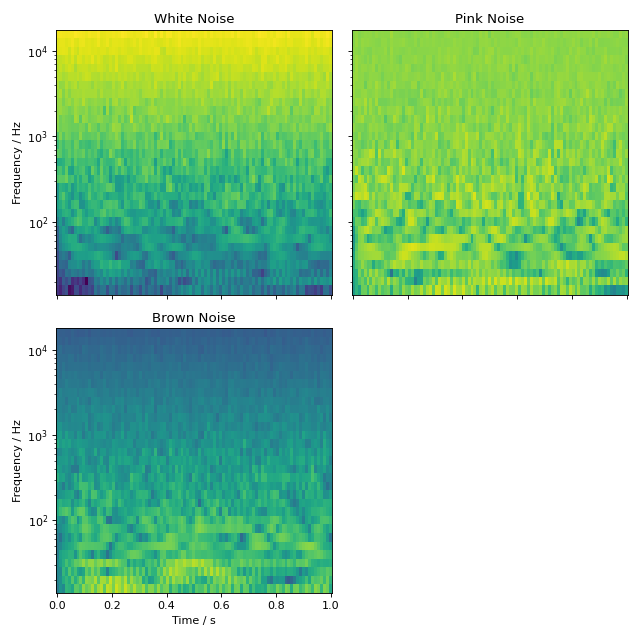

Generating Noise
audiotoolbox provides multiple functions to generate noise. This example
adds white, pink, and brown Gaussian noise to a signal and plots their
spectrograms. The noise variance and a seed for the random number
generator can be defined by passing the respective arguments (see
audiotoolbox.Signal.add_noise()).
import audiotoolbox as audio
import matplotlib.pyplot as plt
white_noise = audio.Signal(1, 1, 48000).add_noise()
pink_noise = audio.Signal(1, 1, 48000).add_noise(ntype='pink')
brown_noise = audio.Signal(1, 1, 48000).add_noise(ntype='brown')
wspec, fc = white_noise.time_frequency.octave_band_specgram(oct_fraction=3)
pspec, fc = pink_noise.time_frequency.octave_band_specgram(oct_fraction=3)
bspec, fc = brown_noise.time_frequency.octave_band_specgram(oct_fraction=3)
norm = plt.Normalize(
vmin=min([wspec.min(), pspec.min(), bspec.min()]),
vmax=max([wspec.max(), pspec.max(), bspec.max()])
)
fig, ax = plt.subplots(2, 2, sharex='all', sharey='all', figsize=(8, 8))
ax[0, 0].set_title('White Noise')
ax[0, 0].pcolormesh(wspec.time, fc, wspec.T, norm=norm)
ax[0, 1].set_title('Pink Noise')
ax[0, 1].pcolormesh(pspec.time, fc, pspec.T, norm=norm)
ax[1, 0].set_title('Brown Noise')
ax[1, 0].pcolormesh(bspec.time, fc, bspec.T, norm=norm)
ax[1, 0].set_xlabel("Time / s")
for a in ax[:, 0]:
a.set_ylabel('Frequency / Hz')
for a in ax.flatten():
a.set_yscale('log')
ax[1, 1].set_visible(False)
plt.tight_layout()
plt.show()
(Source code, png, hires.png, pdf)
{kind=link}
{kind=link}

Uncorrelated noise can be generated using the
audiotoolbox.Signal.add_uncorr_noise() method. This uses the
Gram-Schmidt process to orthogonalize noise tokens to minimize variance
in the created correlation:
>>> noise = audio.Signal(3, 1, 48000).add_uncorr_noise(corr=0.2, ntype='white')
>>> np.cov(noise.T)
array([[1.00002083, 0.20000417, 0.20000417],
[0.20000417, 1.00002083, 0.20000417],
[0.20000417, 0.20000417, 1.00002083]])
There is also an option to create band-limited, partly-correlated, or
uncorrelated noise by defining low-, high-, or band-pass filters that are
applied before the Gram-Schmidt process. For more details, please refer
to the documentation of audiotoolbox.Signal.add_uncorr_noise().